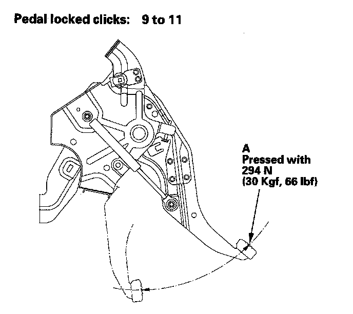
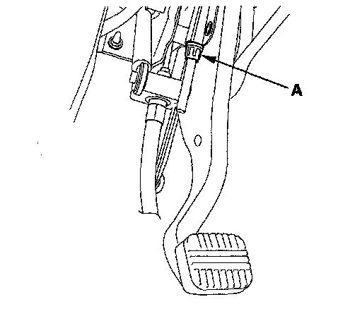
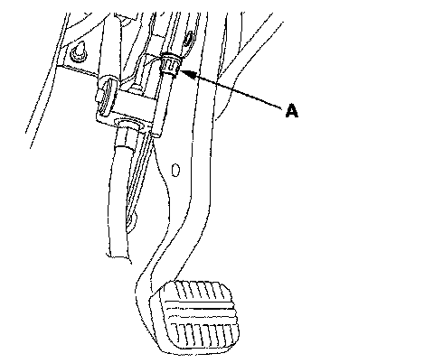
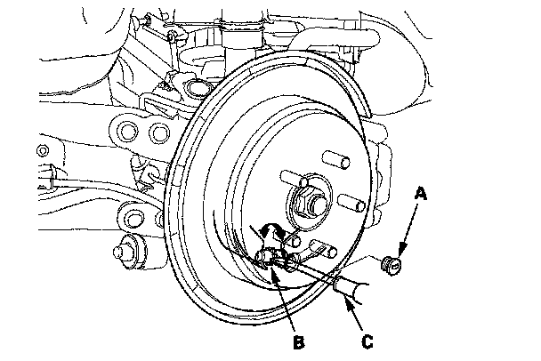

Parking Brake Cable: Adjustments
Parking Brake Inspection and AdjustmentInspection
1. Press the parking brake pedal (A) with 294 N (30 kgf, 66 lbf) of force to fully apply the parking brake. The parking brake pedal should be locked within the specified number of clicks.

2. Adjust the parking brake if the pedal clicks are not within the specification.
NOTE: Minor parking brake pedal adjustments (1 to 2 clicks) can be made with the adjusting nut. If a larger adjustment is required, follow the major adjustment procedure using the adjuster nut at the parking brake drum.
After installing new parking brake shoes and/or new brake disc/drum, make sure you drive the vehicle for "break-in".
Minor Adjustment
1. Raise the rear of the vehicle, and support it with safety stands in the proper locations.
2. Fully release the parking brake pedal.
3. Press the parking brake pedal 1 click.
4. Tighten the parking brake adjusting nut (A) until the parking brakes drag slightly when the rear wheels are turned.

5. Release the parking brake pedal fully, and check that the parking brakes do not drag when the rear wheels are turned. Readjust if necessary.
6. Make sure the parking brakes are fully applied when the parking brake pedal is pressed all the way.
Major Adjustment (to be done when replacing parking brake shoes and after lining surface break-in)
1. Raise the rear of the vehicle, and support it with safety stands in the proper locations.
2. Fully release the parking brake pedal.
3. Back off the parking brake adjusting nut (A) in the parking brake pedal.

4. Remove the rear wheels.
5. Remove the access plug (A).

6. Turn the ratchet teeth on the adjuster nut (B) with a flat-tip screwdriver (C) until the shoes lock against the parking brake drum. Then back off the adjuster 10 clicks, and install the access plug.
7. Clean the mating surface of the brake disc/drum and the inside of the wheel, then install the rear wheels.
8. Do the minor adjustment procedure.